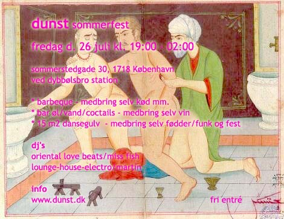

| Sommerfest | 26. Juli 2002 |
 |
|
| dunst Sommerfest kl. 19:00 - 02:00 Barbeque i gården - medbring selv kød mm. Bar øl/vand/coctails - medbring selv vin. 15 m2 dansegulv - medbring selv fødder/funsk og fest DJ's: Oriental Love Beats/Miss Fish Lounge-House-Electro Minimal Martin |
|